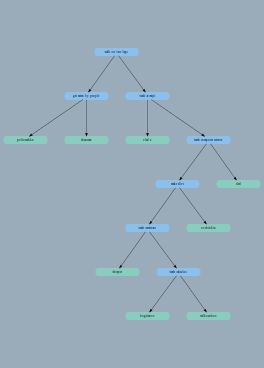

xuyovoe tree
Dumping tree at cpp/testtree.cpp in function int main() (line 15)...
this tree has name tree [000000000063fdf0]
it was created in file cpp/testtree.cpp
in function int main() (line 12)
tree is ok
root [0000000000a66b80].
nodes:
pre-order:
[0] = UNITIALIZED_STRING (depth 0)
in-order:
[0] = UNITIALIZED_STRING (depth 0)
as in save file:
{UNITIALIZED_STRING}

norm tree
Dumping tree at cpp/testtree.cpp in function int main() (line 21)...
this tree has name tree [000000000063fdf0]
it was created in file cpp/testtree.cpp
in function int main() (line 12)
tree is ok
root [0000000000a66b80].
nodes:
pre-order:
[0] = walk on two legs (depth 0)
[1] = get eaten by people (depth 1)
[2] = poltorashka (depth 2)
[3] = shaurma (depth 2)
[4] = teach at mipt (depth 1)
[5] = vlad z (depth 2)
[6] = teach computer science (depth 2)
[7] = make slivi (depth 3)
[8] = teach seminars (depth 4)
[9] = shtepin (depth 5)
[10] = teach calculus (depth 5)
[11] = bogdanov (depth 6)
[12] = redkozubov (depth 6)
[13] = ovchinkin (depth 4)
[14] = ded (depth 3)
in-order:
[0] = poltorashka (depth 2)
[1] = get eaten by people (depth 1)
[2] = shaurma (depth 2)
[3] = walk on two legs (depth 0)
[4] = vlad z (depth 2)
[5] = teach at mipt (depth 1)
[6] = shtepin (depth 5)
[7] = teach seminars (depth 4)
[8] = bogdanov (depth 6)
[9] = teach calculus (depth 5)
[10] = redkozubov (depth 6)
[11] = make slivi (depth 3)
[12] = ovchinkin (depth 4)
[13] = teach computer science (depth 2)
[14] = ded (depth 3)
as in save file:
{walk on two legs
{get eaten by people
{poltorashka}
{shaurma}
}
{teach at mipt
{vlad z}
{teach computer science
{make slivi
{teach seminars
{shtepin}
{teach calculus
{bogdanov}
{redkozubov}
}
}
{ovchinkin}
}
{ded}
}
}
}
